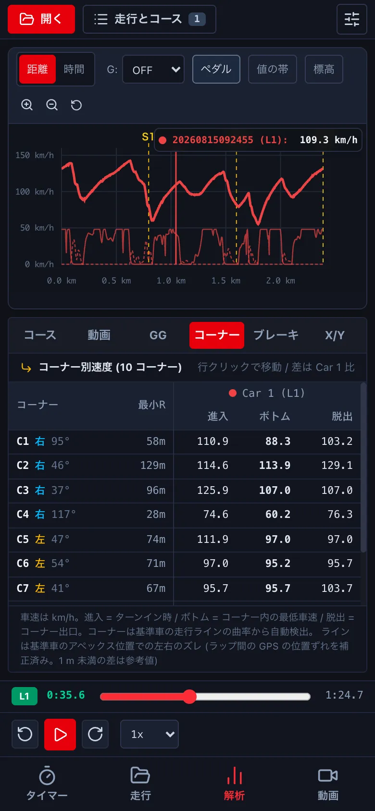
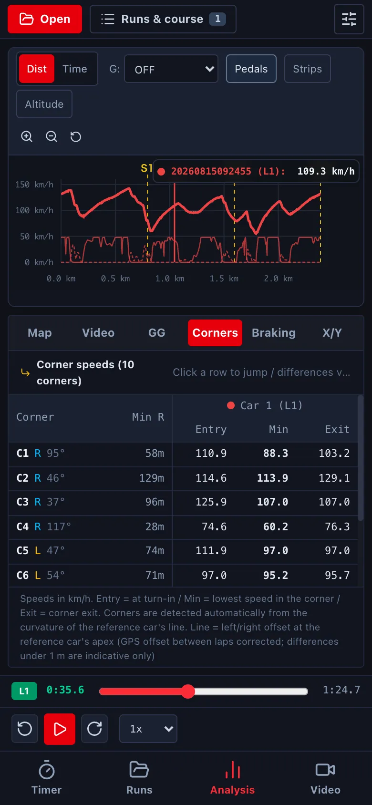
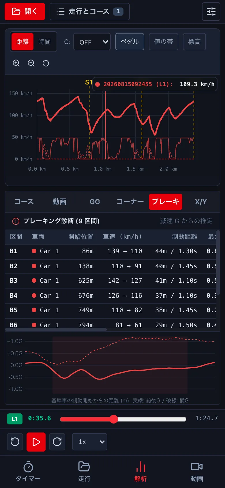
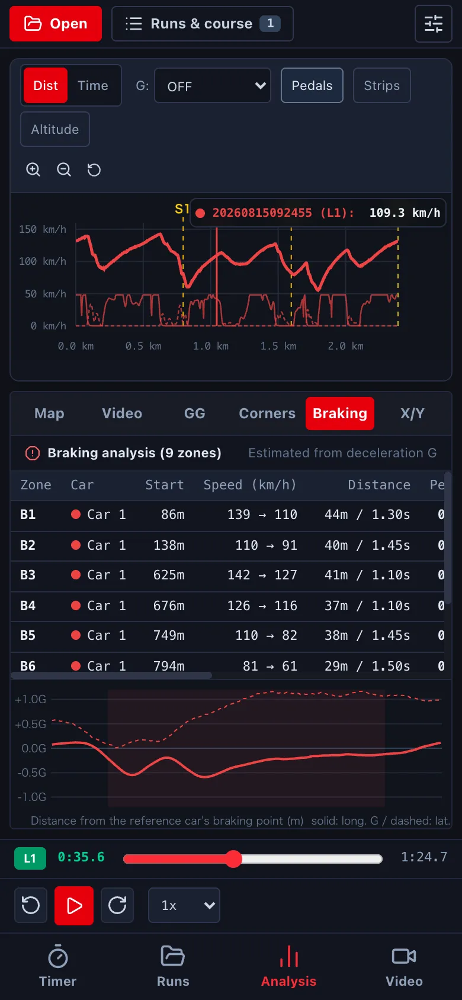
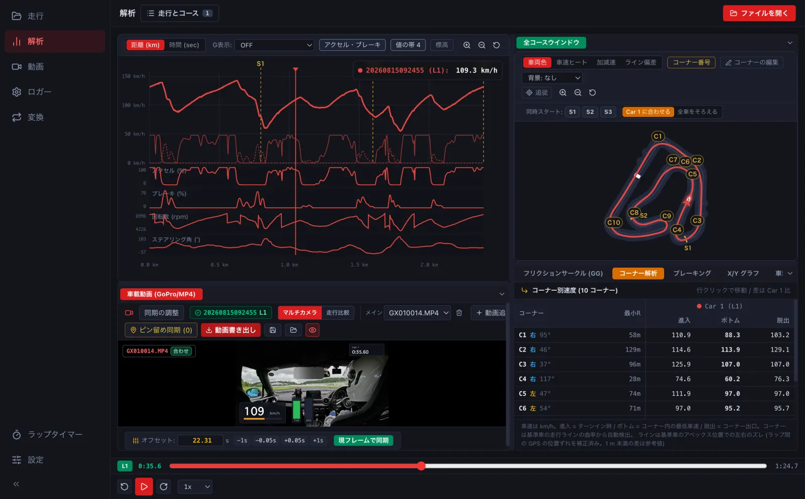
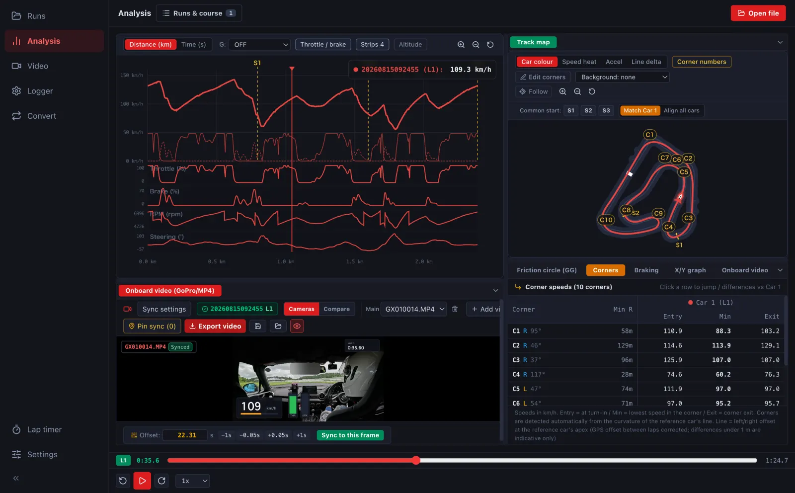

コーナー・ブレーキング・GG・値の帯Corners, braking, GG and value strips
コーナーごとの速さ、ブレーキの踏み方、G の使い方を細かく見ます。アクセル・回転数などの記録があれば、速度のグラフの下に帯で出せます。Look closer at each corner, your braking and how you use the grip. If throttle, RPM and so on were recorded, show them as strips under the speed graph.
-
コーナー: コーナーごとの進入・ボトム・脱出の速度と、いちばん小さい曲がりの半径 (R) です。行を押すとその場所へ動きます。Corners: entry, minimum and exit speed and the tightest radius (R) for each corner. Click a row to jump there.


-
ブレーキング: ブレーキの区間ごとに、始めた位置・速度の落ち方・止まるまでの距離・いちばん強い減速 G を出します。Braking: for each braking zone, where it started, the speed drop, the distance and the peak deceleration.


- GG: 縦と横の G の散らばりです。外側の円 (限界円) に近いほど、タイヤを使い切っています。GG: the spread of longitudinal and lateral G. The closer to the outer circle, the more grip you are using.
-
値の帯: 速度のグラフの上の 値の帯 から、アクセル・ブレーキ・回転数・ステアリング角などを選ぶと、グラフの下に細い帯で出ます (4 つまで。帯ごとに自分の目盛りです)。記録のあるログだけ出ます (→ G1)。Value strips: choose throttle, brake, RPM, steering and more from Strips above the speed graph to show them as thin strips underneath (up to four, each with its own scale). Only for logs that record them (→ G1).

